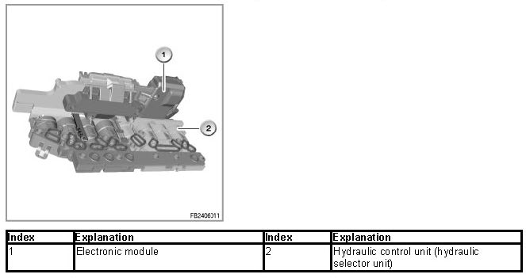
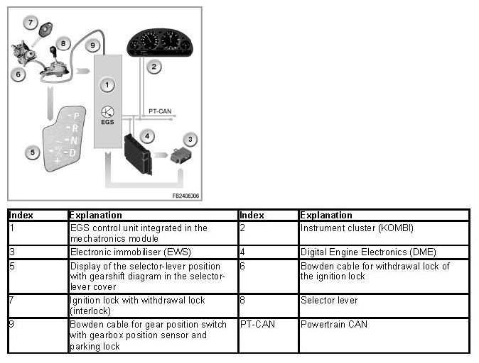
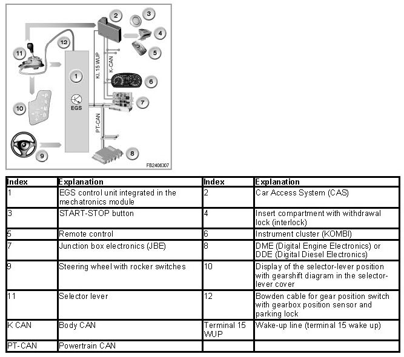

Mechatronics
Mechatronics
Mechatronics
The automatic gearbox is controlled by the mechatronics module. The mechatronics module is a combination of a hydraulic control unit (hydraulic selector unit) and an electronics module.
The hydraulic control unit is the hydraulic part of the gearbox control.
The electronics module contains the EGS control unit, the sensors as well as the gearbox-internal connections.

Brief description of components
The following components of the mechatronics module are described:
EGS control unit
The EGS control unit controls gearshift points, the shift quality, engaging and disengaging the converter lockup clutch as well as the hydraulic pressure.
The data the EGS control unit requires to shift the gears is transferred on the Powertrain CAN (PT-CAN) to the EGS control unit (e.g. fuel injection period, engine speed, throttle-valve angle, engine temperature and engine intervention). In the mechatronics module, the EGS control unit directly activates the solenoid valves and the electronic pressure control valves.
Hydraulic unit
The clutches of the automatic gearbox are hydraulically controlled in the hydraulic control unit.
For gearbox control, the following components are installed in the hydraulic control unit:
- Gear position switch
- 2 solenoid valves
- 6 electronic pressure control valves
- 1 gearbox temperature sensor
System functions
The following system functions are described:
Adaptive gearbox control
In the same way as the automatic gearboxes used to date, this 6-speed-automatic gearbox also offers a choice between a comfort program and sport program.
The adaptive gearbox control (component of the Electronic Gearbox Control) adapts the shift characteristics of the comfort program and sport program to the driver's choice and the driving situation.
In each of the two programs, the adaptive gearbox control switches on request from a basic characteristic map into a performance-oriented characteristic map:
- Comfort program at selector-lever position "D"
The comfort program is based on various characteristic maps: e.g. the characteristic map "XE" (extreme economy) and the characteristic map "E" (economy). The EGS control unit normally chooses the economical characteristic map "XE" (= basic characteristic map). With special requirements (e.g. load requirement), a switch is made to the performance-oriented characteristic map "E". If the input signals change towards "more moderate driving style", there is a switch back to the economical characteristic map "XE".
- Sport program at selector-lever position "M/S"
The Sport program implements dynamic sports shift characteristics. In the sport program, there are various characteristic maps, e.g. the basic characteristic map "S" (sport) and the performance-oriented characteristic map "XS" (extreme sport). With a very dynamic driving style, there is a switch from the basic characteristic map "S" to the performance-oriented characteristic map "XS".
The adaptive gearbox control takes account of the following requirements:
Adaptation to the driver type
The adaptation to the driver type runs via the following values:
- Kick fast
When the accelerator pedal is pressed down quickly, the shift program is changed accordingly. the determined accelerator-pedal value is compared with threshold values in the EGS control result of this comparison is that one of the two possible programs is proposed (e.g. with comfort program "XE" or "E", with sport program "S" or "XS").
- Cornering detection
The cornering detection reacts to the lateral acceleration of the vehicle with an indirect adaptation to the driver type.
The lateral acceleration is regarded as an indirect statement on the preferred dynamism and does not lead to an immediate gearshift reaction (gearshifts in bends can negatively influence driving stability). The lateral acceleration is calculated from the signals of the wheel-speed sensors as well as the yaw rate and driving speed.
- Brake assessment
The brake assessment is similar to the process for assessment of "kick fast".
The braking deceleration is determined and compared with threshold values in the EGS control unit. The result of this comparison is that one of the two possible programs is proposed (e.g. with comfort program "XE" or "E", with sport program "S" or "XS").
The adaptation to the driver type is restarted every time the vehicle drives off from a standstill.
Hill ascent and operation with trailer
This function is based on a comparison of the actual car acceleration with a nominal value. Taking account of the current operating condition of the engine, the acceleration on a trip with normal load on a float road is estimated. If the actual acceleration is significantly below the theoretical value, the function "Hill ascent and operation with trailer" becomes active.
The configuration of the corresponding shift characteristic maps permit a driving style with high revolutions. Unwanted upshifts and frequently upshifts and downshifts are excluded or severely limited.
Hill descent
When the EGS control unit detects a hill descent, it shifts to the next-lowest gear if the driving speed increases. This reinforces the brake effect of the engine. A downshift only takes place if the engine speed lies below the maximum number of revolutions of the next-lowest gear.
The EGS control unit detects the hill descent by the signals from the throttle valve potentiometer (load), from the wheel-speed sensors (driving speed) and from the brake-light switch (brake operation).
Braking deceleration and automatic upshift
To brake the vehicle, the driver takes his or her foot from the accelerator pedal and operates the brake if required. According to the characteristic curve, closure of the throttle would trigger an upshift. These gear changes make no sense in conjunction with braking, as they prevent use of the engine braking effect.
The braking intention can frequently be recognized by a very rapid return of the driving pedal to the zero position. When such an action is detected, an upshift is suppressed until the accelerator pedal is in the zero position and the vehicle is coasting.
Winter program (only in selector-lever position "D")
If the drive wheels slip even at low acceleration, the winter program is activated automatically. The winter ensures better traction by eliminating 1st gear. Early upshifts reduce the reaction on load change. If the wheels not slip with high input torque for a number of seconds, the winter program is deactivated again.
Overlap control
The overlap control ensures gentle shift characteristics as follows: in the overlap control, a number of multi-plate clutches are used simultaneously. In the engaged multi-plate clutch, the pressure is reduced and simultaneously pressure is built up in the clutch to be engaged. The pressure decrease or pressure build-up is maintained until a synchronized speed is reached. Then, the hydraulic pressure for the multi-plate clutch to be engaged can be built up in full. The overlap control is in all shifts from 1st to 6th gear and from 6th to 1st gear.
Starter interlock
It is only possible to start the engine in selector-lever position "P" or "N".
E83
The EWS (electronic immobilizer) evaluates the following signal from the EGS (Electronic Gearbox Control) for the start:
- Selector-lever position "P" or "N" as signal via the direct line

E81, E87, E90, E91, E92, E93
The CAS (Car Access System) evaluates the following signals from the EGS (Electronic Gearbox Control) for the start:
- The selector-lever position "P" or "N" as CAN message via the Powertrain CAN
- Selector-lever position "P" or "N" as signal via the direct line
As a general principle, the CAN message is used. If this is faulty or invalid, a switch is made to the signal from the direct line.

Warm-up program
After every engine start below a certain engine temperature, the warm-up program is started. In the warm-up program, the automatic gearbox remains in the performance-oriented characteristic map XE or XS until a certain temperature is reached. The gears are only shifted at higher engine speeds. This enables the engine and catalytic converter to reach their operating temperature more quickly.
Up to a certain gearbox oil temperature, the converter lockup clutch is not regulated or closed.
Engine intervention
During the shifting operation, the EGS control unit sends signals that influence the DME (Digital Engine Electronics) or DDE (Digital Diesel Electronics).
The DME sets back the ignition timing angle for a few milliseconds.
The DDE reduces the volume of fuel for a few milliseconds by shortening the fuel injection period.
These measures briefly reduce the engine torque, improve shift quality, reduce the load on the gearbox, and shorten the shifting time.
Gearshift lock against downshifting
A gearshift lock prevents shifting into a lower gear until the engine speed lies below the maximum number of revolutions of the next-lowest gear. The engine-speed signal is transferred by the DME/DDE to the EGS control unit.
The gearshift lock prevents damage to the engine and gearbox.
Reverse gear interlock
The electronically controlled reverse gear interlock blocks the engagement of reverse gear at forward driving speeds above 8 kph. If the specified driving speed is exceeded, the corresponding solenoid valves are not activated. This prevents filling the multi-plate clutches for reverse gear.
No liability can be accepted for printing or other errors. Subject to changes of a technical nature